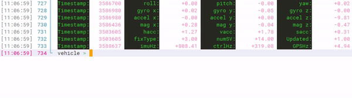

控制台功能是RflyPilot飞控的一个非常实用的功能，它起到了远程调试的功能，它可以作为简易的飞控地面站功能。它支持多种调试指令，也可也由开发者自行增加指令。于此同时，控制台还支持实时显示当前状态信息，包括姿态、GPS信号质量、运行频率等等。在室外进行实飞实验时，利用手机SSH连接到RflyPilot控制台，即可简单便捷地获取飞控状态信息，查看异常信息。

状态信息
如上图所示，RflyPilot飞控的状态信息会实时更新。
| 符号 | 说明 | 单位 |
|---|---|---|
| Timestamp | 当前行变量的时间戳 | 微秒 |
| roll/pitch/yaw | 姿态角 | deg |
| gyro_{x,y,z} | 角速度 | deg/s |
| accel_{x,y,z} | 加速度 | m/s^2 |
| mag_{x,y,z} | 磁力计输出 | |
| hacc | GPS水平精度因子 | |
| vacc | GPS垂直精度因子 | |
| sacc | GPS速度精度因子 | |
| fixType | GPS工作模式 | |
| numSV | GPS卫星数 | |
| Updated | 状态估计初始化完成标志位 | |
| imuHz | IMU采样率 | Hz |
| ctrlHz | 控制器运行频率 | Hz |
| GPSHz | GPS数据更新频率 | Hz |